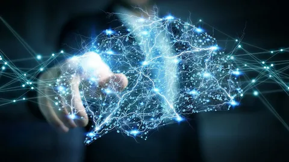
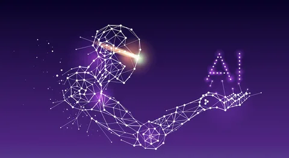

Нейросети — это магия современной технологии, а рассмотрение их функций подобно погружению в загадочный лес разума. Эти выдающиеся вычислительные структуры вдохновлены биологией человеческого мозга и обладают уникальной способностью к обучению на основе данных, что делает их ключевым игроком в мире искусственного интеллекта.
Области применения нейросетей охватывают широкий спектр, включая:
«Нейросети открывают новые перспективы в понимании и применении искусственного интеллекта, становясь ключевым элементом технологической революции.»
Эти интеллектуальные механизмы, обучаемые и адаптивные, формируют основу для трансформации различных областей. Глубокое понимание их принципов и потенциала открывает новые перспективы для обнаружения областей применения и улучшения существующих технологий.
Нейросети становятся неотъемлемой частью будущего технологий. Исследования в этой области помогают нам не только лучше понимать природу человеческого интеллекта, но и открывают новые горизонты для инноваций в различных сферах человеческой деятельности. Их роль в технологическом прогрессе будет продолжать расширяться, формируя ландшафт новых возможностей и решений для глобальных проблем.
Исследуйте, творите и воплощайте будущее вместе с нейросетями!
